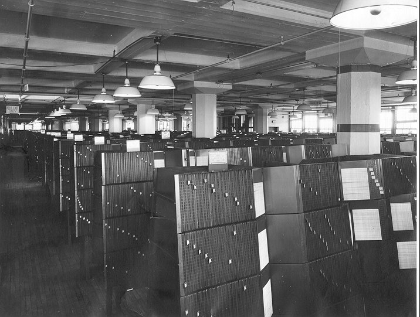

1935 On August 14, 1935, President Roosevelt signed the Social Security Act. On August 23 of that same year he appointed a three-man Social Security Board to administer the Act. November 1935, the Social Security Board adopted an identifier composed of 3 alphabetic characters representing geographic areas and 5 numeric characters. However, the Board made this decision without consulting other federal agencies. On December 17, 1935, the Board approved the 9-digit SSN format, a 9-digit number consisting of a 4-digit serial number, a 2-digit year of birth indicator, and a 3-digit number indicating the geographic area of registration;. The Board planned to use the year one attained age 65 as part of the SSN, thinking that once an individual attained age 65, the SSN would be reassigned to someone else.
1936 Originaly named Bureau of Old-Age Benefits - The unemployment compensation delegates objected to the use of digits to signify age because they thought a number of workers would falsify their age. As a result, a new scheme adopted by the Board on February 14 consisted of a 3-digit area code, a 2-digit month of birth, and a 4-digit serial number. Finally in June 2, 1936, the Board decided to keep the 9-digit scheme, although using the fourth and fifth digits to represent the month of birth was abandoned. Instead, those two digits would be a "group number" that could be used to maximize the utility of mechanical equipment and to verify the accuracy of punch cards. In 1936 the Social Security Board planned eventually to use area numbers to redistribute work to its 12 regional centers to serve workers in those areas. One or more area numbers were allocated to each state based on the anticipated number of SSN issuances in the state. until 1972, the area number represented the state in which the card was issued.
Generally, area numbers were assigned in ascending order beginning in the northeast and then moving westward. For the most part, people on the east coast have the lowest area numbers and those on the west coast have the highest area numbers. However, area numbers did not always reflect the worker's residence. During the initial registration in 1936 and 1937, businesses with branches throughout the country had employees return their SS-5 Application for Account Number to their national headquarters, so these SSNs carried the area number where the headquarters were located. As a result, the area numbers assigned to big cities, such as New York, Philadelphia, Boston, and Chicago, were used for workers in many other parts of the country (McKinley and Frase 1970, 373). Also, a worker could apply in person for a card in any Social Security office, and the area number would reflect that office's location, regardless of the worker's residence. In early June 1936, the Board decided to use a small paper card instead of metal. In October 1936, the Social Security Board selected a design submitted by Frederick E. Happel, an artist and photo engraver from Albany, NY, for the original Social Security card, for which Happel was paid $60. The Board placed an initial order for 26 million cards. In November 1936 the Board instead assigned headquarters staff to 56 Bureau field offices, covering all but one of the cities where the Post Office Department had set up its "central accounting" offices. 35 million SSNs were issued in the first 8 months of the registration effort. The publicity campaign and the Post Office Department's efforts resulted in over 22 million completed applications as of December 22, 1936, 28 days after the initial distribution of employee applications.
Data collected for each person:
* Employee name
* Employee address
* Name of current employer
* Employer address
* Age of employee
* Date of birth
* Place of birth
* Sex
* Color (instead of Race)
* U.S. Employment Service (USES) registration card number, if applicable
* Date and place of previously completed an SS-5, if applicable
* Completion date for current SS-5
* Signature (SSA 1990)
1937 Employers were to begin to deduct payroll taxes from worker's wages in January 1937. It would not be until May 1937 that a series of Supreme Court decisions cemented the constitutionality of the Social Security Act. Social Security benefit computations consider a worker's earnings from 1937.
1938 Initially, only employees working in covered employment and aged 64 or younger were eligible to obtain an SSN. However, almost from the start, state unemployment compensation agencies began using SSNs to identify workers, and some employers tended to prefer hiring individuals who already possessed an SSN (Social Security Board 1938, 53). So, after a few months the Bureau began issuing SSNs to anyone who applied. Sample studies in 1937 or early 1938 indicated that duplicate account numbers had been issued to not more than 3 or 4 percent of the applicants.
In 1938, a wallet manufacturer in Lockport, New York, the E.H. Ferree Company, decided to promote its product by showing how a Social Security card would fit into the wallet. The company vice president thought it would be clever to use a sample card with his secretary's actual SSN. The wallet was sold at Woolworth's13 and many other large department stores, and the SSN was widely distributed. Many purchasers adopted the SSN as their own—5,755 people were using it in the peak year 1943, and 12 were still using it as late as 1977. In all, SSA received 40,000 incorrect earnings reports under this SSN, which had to be reassigned laboriously to proper SSNs. SSA voided the much-used number and issued a new SSN to the secretary (SSA n.d. c).
1940 219-09-9999
1943 The expansion of SSN use began in 1943 with Executive Order (EO) 9397 requiring federal agencies to use the SSN for the purpose of identifying individuals in any new record systems
1946 In 1946 the Social Security Board was dissolved and replaced by the Social Security Administration, but Mr. Altmeyer's appointment as Commissioner assured continuity in our program leadership.
1954 Disability program, freeze enacted. coverage: Farm and professional, self employed, clergymen on an elective basis, additonal groups of farm, domestic and governmental employees. 1956 In 1956, the Social Security Administration installed the first large-scale computer to maintain records of earnings and to compute the benefits payable to workers and their families when they retire, become disabled, or die. 1958 In 1958 the Index was microfilmed. By 1958, the Flexoline (visible index) contained 160 million strips (each with a SSN) in 750 steel A-frame stands, and SSA was adding an average of 7 million new strips each year. In August 1958, SSA began converting the Flexoline index to microfilm and began capturing new SSN records on magnetic tape, using a special machine to then transcribe the code directly from magnetic tape into a readable microfilm record (Staruch 1978, 29–30).

This visual file which represented all names and name changes for account number card holders was maintained until 1958 when it was microfilmed. It occupied 23, 557 square feet of space on the seventh floor of the Candler Building.
1960

1961 In 1961, issuance of original SSNs was centralized in Baltimore, but local offices continued to issue replacement cards. In 1961, the Federal Civil Service Commission established a numerical identification system for all Federal employees using the SSN as the identifying number.
1962 the Internal Revenue Service (IRS) decided to use the SSN as its taxpayer identification number (TIN) for individuals
1963 Sequence 700 through 728 was assigned to railroad workers until July 1963
1964 By 1964, the 200 million names in the National Employee Index were contained on 2,005 reels of magnetic tape that Bureau employees accessed by means of high-speed microfilm readers
1967 in 1967, the Defense Department adopted the SSN as its identification number for military personnel
1970 SSA's first electronic system was not developed until 1970, when electronic verification of alleged numbers (EVAN) was introduced for internal use at field offices with Advanced Records System (ARS) submission
1971 In 1971, an SSA task force studied issues raised by nonprogram use of the SSN and proposed that SSA take a "cautious and conservative" position and do nothing to promote its use as an identifier.
1972 In March 1972, SSA began assigning SSNs and issuing cards exclusively from Baltimore via a computer-based system. It was also in 1972 that all applicants for federal benefits were required to have their own SSN. The area number is now assigned based on the ZIP code of the mailing address provided. In 1972, SSA created an electronic file, the Numerical Index File or Numident, to house the numerically-ordered master file of all assigned SSNs.
1973 In 1973, a report of the Department of Health, Education, and Welfare (now Health and Human Services) concluded that the adoption of a national identifier was not desirable, and that the SSN was not suitable for such a purpose
1974 SSN requests by law enforcement are not authorized by, and probably forbidden by, Section 7 of the Privacy Act of 1974. SSA has since introduced more rigorous verification procedures. On April 15, 1974, SSA implemented evidence requirements (age, identity, and citizenship/alien status) for applicants for an original SSN who are foreign-born, or are U.S.-born and age 18 or older. In 1974, SSA began assigning SSNs for nonwork purposes when such use of an SSN was authorized by law. Initially, the nonwork cards looked the same as cards issued to citizens and aliens authorized to work.
1975 May 15, 1978, SSA began requiring evidence of age, identity, and citizenship/alien status from all applicants for original SSNs, and evidence of identity for replacement Social Security cards. In addition, all foreign-born applicants for replacement cards were required to submit evidence of citizenship/alien status. In 1975, SSA's Bureau of Data Processing implemented the Full Registration and Identification System (FRIS) which expanded electronic screening capabilities and added electronic validation of SSNs (SSA 1990, 5).
1979 586 was divided among American Samoa, Guam, the Philippines, Americans employed abroad by American employers and, from 1975 to 1979, Indochinese refugees. In 1973, SSA began converting its legacy SS-5 records to the Numident electronic database, completing the conversion in 1979. There is one Numident record for each SSN ever assigned. in 1979 SSA created an electronic file called MULTX from a set of punch cards identifying multiple SSNs that was maintained by SSA's Office of Earnings Operations.
1981 The 1981 Omnibus Reconciliation Act (P.L. 97-123) added alteration and forgery of a Social Security card to the list of prohibited acts and also increased the penalties for such acts.
1982 In May 1982, SSA began annotating cards issued for nonwork purposes with the legend "not valid for employment."
1983 In 1983, SSA implemented the Enumeration Verification System (EVS) for verifying batches of SSNs; EVS employed a series of verification routines that are still in use. In 1983, section 205(c)(2)(G) of the Social Security Act was amended to require that the "social security card shall be made of bank-note paper and (to the maximum extent practicable) shall be a card which cannot be counterfeited" (P.L. 98-21). SSA worked with the Bureau of Engraving and Printing, the Secret Service, and the Federal Bureau of Investigation (FBI) to design a card that met these requirements. Changes were made to the card stock to make any attempt to erase or remove data easily detectable, and a form of printing with a raised effect that is difficult to replicate was used. Other features not obvious to the naked eye were also added.
1984 SSA implementation of an automated SSN screening system in 1984. In 1984, SSA created the Automated Enumeration Screening Process (AESP) to run every application for an original or replacement card through the Alphident (since converted to a database linked to the Numident file) to determine if the data on the incoming record match one or more existing records using a complex scoring system. If a potential match is indicated between an existing record and an application for an original SSN, the field office is alerted to resolve the matter. If no previously established record is found, an original SSN is issued to the applicant.
1986 To claim a dependent on US taxes, a SSN is required to be listed if they are over the age of 5.
Under IRCA, all employers are required to verify the identity and employment eligibility of all employees hired after November, 1986, regardless of citizenship or national origin.
1987 In August 1987, SSA began a three-state pilot of the "Enumeration at Birth" (EAB) process in which the parent of a newborn can request an SSN as part of the state's birth registration process.
1988 To claim a dependent on US taxes, a SSN is required to be listed if they are over the age of 2.
In 1988, to prevent photocopy counterfeits, a security feature that displays as "void" when photocopied was added. Also in 1988, legislation increased the monetary penalties for SSN violations.
1990 To claim a dependent on US taxes, a SSN is required to be listed if they are over the age of 1.
1991 Additional states began to participate in EAB in July 1988. By the end of 1991, 45 states, the District of Columbia, Puerto Rico, and New York City had signed agreements. No microfilm SS-5 exists for a record created through the EAB process.
1992 Beginning in September 1992, SSA began issuing SSN cards with the legend "VALID FOR WORK ONLY WITH INS AUTHORIZATION" to noncitizens lawfully in the United States with temporary authority to work.
1994 To claim a dependent on US taxes, a SSN is required to be listed.
Courts may collect and use the SSNs of jurors for limited purposes per 42 U.S.C. § 405(c)(2)(E)
Widespread distribution of the SSN from driver records has been phased out with the 1994 adoption by Congress of a statute barring disclosure of "personal information" in drivers' licenses per 18 U.S.C.A. § 2725 (West Supp. 1997)
For any person to receive a federal education grant or loan, the student must furnish a SSN to the school for which they are applying.20 U.S.C. § 1091(a)(4)(B)
1995 Courts have consistently held that SSNs are to be withheld from public requesters of agency documents and therefore will not be released or will be redacted from released documents. e.g., Sheet Metal Workers Int'l Assn. v. United States Air Force, 63 F.3d 994(10th Cir. 1995)
1996 The 1996 federal welfare reforms contained a number of provisions authorizing, or sometimes requiring, the use of SSNs as a means of locating individuals who fail to pay their child support or alimony obligations 42 U.S.C. § 405(c)(2)(C)(ii) (1994) A major expansion of SSN use was provided in 1996 under welfare reform. Under welfare reform, to enhance child support enforcement, the SSN is to be recorded in the applications for professional licenses, driver's licenses, and marriage licenses; it must be placed in the records relating to a divorce decree, support order, or paternity determination or acknowledgment; and it must be recorded in the records relating to death and on the death certificate. When an individual is hired, an employer is required to report this event to the State's New Hire Registry. This "New Hire Registry" is part of the expanded Federal Parent Locator Service which enables States to find non-custodial parents by using the SSN.
1997 The use of SSNs as a means for identifying and tracking drivers is common in several states per e.g. N.J. ADM. CODE tit. 13, § 21-1.3(a) (1997)
1998 Almost 90 percent of the original Social Security cards issued in calendar year 1998 were processed through EAB. SSA introduced access to an automated system--called Systematic Alien Verification for Entitlements (SAVE) in a few offices several years ago, and by January 1997, SSA had SAVE in every SSA office
1999 (date unknown) Until recently SSA also maintained a separate SSN master file indexed by cardholder name. The Alpha Index File or Alphident enabled SSA employees to search by name if the number was unknown. In the process of modernizing SSA's master files, this file was converted to an IBM DB2 relational database linked to the Numident file. This database provides the same basic functionality as the Alphident. Like the Flexoline, the DB2 uses the Russell Soundex Coding System to group all surnames that have the same basic consonant sounds. When an individual's identifying information is available, an SSA employee can attempt to locate the SSN using a key based on the Soundex version of the last name, plus the first 4 characters of the first name, plus the century, year, and month of birth. SSA has designated this database a sensitive file and access is restricted. Using over 23 software routines to match names to SSNs which initially do not match SSA records-for TY1999, software matched 16 million (about 60 percent) of the initial mismatches.
2000 Effective with the September 1, 2000 benefit payments, the SSN printed on Social Security and Supplemental Security Income checks is no longer visible through the envelope window.
2002 Beginning in 2002, SSA began another pilot program referred to as Enumeration at Entry (EaE) that allows noncitizens admitted for permanent residence to obtain SSNs and Social Security cards based on data collected as part of the immigration process. Also in 2002, SSA began to open offices dedicated entirely to handling Social Security number business. Notifying employers of name/SSN errors. In 2002, we increased these "no match" letters from about 110,000 to 870,000. This is because we sent these letters to all employers who submitted W-2 forms with information that did not match our records instead of only to employers with relatively large number of mismatches. We will be reviewing the effectiveness of this change.
2003 This EaE pilot was expanded worldwide in early 2003. EaE is a joint effort involving the Department of State (DoS), DHS, and SSA. Under EaE, a person aged 18 or older can apply for both an immigrant visa and an SSN at a DoS office in his or her home country. If the visa is granted, then DoS transmits the identifying data from the person's visa/SSN application to DHS. If and when the person is physically admitted to the United States, DHS updates certain data, if necessary, and sends it to SSA for the SSN to be assigned and the card to be issued. All noncitizens enumerated through EaE receive an SSN in the special area number series 729 through 733
2004 In 2004, an estimated 42 million Medicare cards displayed the entire SSN, as did approximately 8 million Department of Defense insurance cards. In addition, although the Veterans Health Administration (VHA) discontinued the issuance of Veterans Identification Cards that display SSNs in March 2004, and has issued new cards that do not display SSNs, the VHA estimates that between 3 million and 4 million previously issued cards containing SSNs remain in circulation with veterans receiving VA health care services. Some universities still use the SSN as the students' identification number for a range of purposes, from administering loans to tracking grades, and may place it on students' identification cards, although usage for these purposes is declining. Additionally, to protect the privacy of recipients who are paid by check and help prevent identity theft, Treasury is taking steps to remove all personal identification numbers, including the SSN, on all check payments. The goal for completing the project is early 2004.
2004 As early as December 2004, IRTPA legislation prohibited states from displaying the SSN on driver's licenses or motor vehicle registrations
2005 The Intelligence Reform and Terrorism Prevention Act (IRTPA) of 2004 (Public Law (P.L.) 108-458) placed limits on the number of replacement Social Security cards an individual can receive. Beginning with cards issued on or after December 17, 2005, individuals may only receive three Social Security cards per year and 10 in a lifetime, with certain exceptions, such as correcting errors or name changes.
2006 The FTC estimates that as many as 9 million Americans have their identities stolen each year (FTC n.d.). Identity theft has reached such proportions that President George W. Bush issued Executive Order 13402 on May 10, 2006, establishing the President's Identity Theft Task Force.
2007 In a July 3, 2007, Federal Register notice, SSA solicited public comment on a proposal to change the way SSNs are assigned (SSA 2007b). Under this proposal, SSA would randomly assign SSNs from the remaining pool of available numbers, and the first three digits would no longer have any geographic significance. As of December 2007, SSA had identified and cross-referenced in the MULTX file over 4.7 million individuals with multiple SSNs, about 93 percent of whom have only two SSNs. Generally, those with multiple SSNs are the "very old" on the Numident. In 2007, the President's Identity Theft Task Force included among its SSN recommendations that "federal agencies should reduce the unnecessary use of SSNs, the most valuable commodity for an identity thief."
2009 As of January 20, 2009, SSA had issued 429,959 original and 114,714 replacement SSNs through the EaE process. SSA is currently working with DoS and DHS on expanding the EaE process to additional noncitizens. The E-Verify program (previously known as the Basic Pilot/Employment Eligibility Verification System), administered by DHS with SSA's support, can be used by employers to verify the SSN and confirm employment authorization under immigration law for newly hired employees. The employer enters the name, SSN, date of birth, and alleged citizenship/alien status from DHS Form I-9 Employment Eligibility Verification into the E-Verify system. E-Verify automatically matches this information against SSA's Numident, as well as DHS immigration records if the hire is a noncitizen. The employer receives an electronic response indicating either that employment is authorized or that the data do not match the information in SSA's or DHS' records. Use of the verification program is voluntary in most parts of the United States, but 13 states require certain employers to use it for new hires. The U.S. Citizenship and Immigration Services website indicates that 109,211 employers, representing close to 434,000 worksites, were registered to use E-Verify as of February 2009.
2010 RM 10205.505 Enumeration at Birth Process. Starting Jan-15-2010 Enumeration at birth (EAB) is a program that allows parents to complete applications for SSNs for their newborns as part of the hospital birth registration process. About 96% of SSNs for infants are assigned through the EAB process.


history of SSN Card
| DATE | CHANGE IN SSN CARD |
|---|---|
1936 |
First version of SSN card. No form number and no revision date. The preprinted information on the card face was in blue ink with a Social Security Board seal (in a lighter shade of blue) in the center of card. The SSN was in red ink. The date of issue was typed on the card. Had a “stub” to type in the mailing address. (The stub was to be put away for safe keeping.) Left edge was perforated. The card had a curved header showing “Social Security Act.” Under the header was “account number.” Had preprinted legends “date of issue” and “employee's signature.” The instructions on the back were in black ink. |
1937 – 1938 |
Second version of SSN card. Same as the first version of the card. The stub had a centered legend “For Office Use Only.” |
1938 – 1940 |
Third version of SSN card. The card itself was the same as the prior version but there were some variations in the printings. In some printings the SSN was printed on the stub; in others it had to be typed on. In some printings the stub had pre-printed spaces for the NH's name and address. First version of replacement SSN card. On the back of the card the form number was shown as “Form OA-702 DUP.” The card format was the same as the original SSN card except it was light green and had “DUPLICATE” printed diagonally across the face in red letters (green letters for those used by RRB). There was a Social Security Board seal in the middle of the card. The left margin was not perforated. The back of the RRB version showed only “RR” in large letters. The cards did not have a stub. Second version of replacement SSN card. The preprinted information was in blue ink. “Duplicate” was not printed on the card. On the back of the card was “Form OA-702.1.” Date of issue was omitted. All printed information was in black ink. Back of card had: Federal Security Agency, Social Security Board |
1940 |
Fourth version of SSN card. The preprinted “date of issue” was eliminated. “Employee's signature” changed to “worker's signature.” The stub had the SSN preprinted in red. “Federal Security Agency” was printed on the back of the stub. Instructions said to show card to employer. Third version of replacement SSN card. The card was the same as the prior version. The stub had a box designated “worker's name and home address.” |
1942 |
Fourth version of replacement SSN card (12/42 revision). The revision date was printed on the back of the card. The legend “employer's name” was pre-printed on the stub. Preprinted information on the card and stub was in blue ink. Instructions (in black ink) included information about name changes. |
1943 |
Fifth version of SSN card (4/43 revision). The card looked the same as the prior version. Instructions on the back of the card were expanded. |
1944 |
Sixth version of SSN card (7/44 revision). The same as the prior version, except the left edge was straight and the form number (“Form OA-702”) and the revision date (7-44) appeared in the lower left corner of the stub and the back of the card. Fifth version of replacement SSN card (7/44 revision). The card was the same as the prior version. “Employer's name” was no longer preprinted on stub. |
1946 |
Seventh version of SSN card (1/46 revision). The seal was now the Social Security Administration Seal and both the card and the stub bore the legend “For Social Security Purposes Not For Identification.” Back of the card showed: Federal Security Agency, Social Security Administration. Sixth version of replacement SSN card (1/46 revision). Both card and stub showed “For Social Security Purposes--Not For Identification” across the bottom. Back of card showed: Federal Security Agency, Social Security Administration. |
1948 |
Eighth version of SSN card (6/48 revision). Some cards were the same as the prior version; others had a new header, “Social Security” with a small SSA seal in the header between “Social” and “Security.” There were variations in the printings of this version. Seventh version of replacement SSN card (3/48 revision). Card had the Social Security Administration seal instead of the Social Security Board seal. Back of card showed: Federal Security Agency, Social Security Administration. Eighth version of replacement SSN card (10/48 revision). The SSA seal appeared as a slightly stippled design in the same shade of blue as the rest of the format. Instructions on the back of the card and the stub were printed in blue ink. |
1949 |
Ninth version of replacement SSN card (7/49 revision). The card was the same as the prior versions with the “Social Security” header. |
1949 – 1951 |
Printings of the 6/48 version of the SSN card had a header “Social Security” with a small SSA seal between the two words. |
1952 |
Ninth version of SSN card (1/52 revision). “Signature” instead of “Worker's signature” appeared on card and stub. Tenth version of replacement SSN card (1/52 revision). “Signature” rather than “Worker's signature” appeared on card and stub. |
1953 |
Tenth version of SSN card (4/53 revision). The card was the same as the prior version. The instructions on the back of the card were revised. Also showed: Department of Heath, Education, and Welfare, Social Security Administration. Eleventh version of replacement SSN card (4/53 revision). The card was the same as the prior version. Instructions on back of card were changed. Back showed: Department of Health, Education, and Welfare, Social Security Administration. |
1954 |
Eleventh version of SSN card (2/54 version). The seal on the card was changed to a small DHEW seal. Twelfth version of replacement SSN card (2/54 revision). The seal was changed to a DHEW seal. Twelfth version of SSN card (7/54 revision). The card was the same as the prior version. There were small changes in the instructions on the back of the card. Thirteenth version of replacement SSN card (7/54 revision). Card and stub were the same as the prior version. Instructions on the back of the card and stub used the term “field office” rather than “district office.” |
1956 |
Fourteenth version of replacement SSN card (3/56 revision). The card and stub were the same as the prior version. Instructions included information for the NH to get in touch with SSA if totally disabled. Thirteenth version of SSN card (4/56 revision). The card was the same as the prior version. Instructions on the back of the card said to get in touch with SSA if a worker became totally disabled. Fifteenth version of replacement SSN card (4/56 revision). The card and stub were the same as the prior version. Some cards may have been printed with 4/56 revision date (rather than 3/56). |
1958 |
Sixteenth version of replacement SSN card (10/58 revision). The card and stub were the same as the prior version. Instructions included information that a woman should contact SSA when she reached age 62. |
1959 |
Fourteenth version of SSN card (5/59 revision). The card and the stub were the same as the prior version. Instructions added information that a woman should contact SSA when she reached age 62. The instructions on the back were in black ink. |
1961 |
Fifteenth version of SSN card (9/61 revision). The card and stub revised to read “For Social Security and Tax Purposes -- Not For Identification.” Seventeenth version of replacement SSN card (11/61 version). The card and stub revised to read “For Social Security and Tax Purposes -- Not For Identification.” |
1970 |
Seventeenth version of SSN card |
1972 |
Eighteenth version of SSN card (1/72 revision). Legend “Not For Identification” was no longer on card (shown from 1946 to 1972). A large DHEW seal was in the middle of the card. The format of the stub was changed to envelope size (the card was a small two-sided tear-off of the stub). The instructions were expanded on the back of the card and stub and were in black ink. |
1974 |
Eighteen version of replacement SSN card. This was the last version of the replacement SSN card. Thereafter, original and replacement cards looked the same. |
1976 |
Nineteenth version of SSN card (4/76 revision). The card is the same as the prior version. The stub size is smaller. The instructions are less and are printed in blue ink. |
1980 |
Twentieth version of the SSN card (5/80 revision). The seal is changed to a DHHS seal. |
1981 |
Twenty-first version of the SSN card (4/81 revision). The card is the same as the prior version. |
1982 |
On May 17, 1982, SSA began annotating SSN cards issued to aliens assigned nonwork SSNs “NOT VALID FOR EMPLOYMENT.” Twenty-second version of SSN card (6/82 revision). The card is the same as the prior version. The SSN was removed from the card stub. Instructions add information about legend on non-work SSN cards. Twenty-third version of SSN card (9/82 version). The card is the same as the prior version. |
1983 |
Twenty-fourth version of SSN card (10/83 revision). SSA begins issuing counterfeit resistant SSN card (on blue banknote paper with randomly placed colored planchettes on the back). |
1984 |
Twenty-fifth version of SSN card (4/84 revision). The card is the same as the prior version with the instructions reformatted. |
1987 |
Twenty-sixth version of SSN card (1/87 revision). Same as prior version with slightly darker shade of blue ink on back of card and stub. |
1988 |
Twenty-seventh version of SSN card (1/88 revision). Anti-copy VOID pattern added as security feature for card. |
1992 |
On September 14, 1992, SSA began showing the legend “VALID FOR WORK ONLY WITH INS AUTHORIZATION” for aliens with temporary work authorization. |
1994 |
Twenty-eighth version of SSN card (January 1994). Language on the card tells NHs to “Keep card in a safe place to prevent loss or theft.” |
1995 |
Twenty-ninth version of SSN card (April 1995), has SSA's new seal on the card. |
1999 |
Thirtieth version of the SSN card (06/99). Corrected SSA address
to which cards should be returned. |
2002 |
Thirty-first version of the SSN card (12/2002). Instructions updated for clarity, to ask that the NH report changes in name, U.S. citizenship or alien status to SSA and not allow others to use SSN. The instruction “do not carry it with you” added to the back of the card. |
2004 |
Thirty-second version of the SSN card (03/2004). The language, “DO NOT CARRY IT WITH YOU” is added to the face of the card and the anti-copy VOID pattern is removed. In April 2004 the restrictive legend, VALID FOR WORK WITH INS AUTHORIZATION is changed to show INS change to DHS. |
2006- 2007 |
Thirty-third version of the SSN card (11-2006). Left side of SSN card carrier includes an explanation of the date printed under signature line on SSN card. Right side of carrier provides instructions for signing card. Beginning 04/07, the date the card is issued is printed under the signature line. Beginning 9/08/07, the number holder’s name will always be printed on two lines, with the last name printed directly below the first and middle names. |
2007 |
Thirty-fourth version of the SSN card (10-2007). The 10-2007 version of the SSN card includes additional security features. Some of the more recognizable features are: A unique non-repeating spiral design, replacing the existing marbleized pattern. The new pattern will be the same or a very similar color to the current background and will continue to be erasable.Color shifting inks added to the face of the card; very recognizable since it is used in currency. A latent image on the face of the card, visible only when the document is viewed at specific angles. Latent images that can be seen when the card is viewed at an angle. Color shifting ink (similar to that used on $20 bills) that changes colors when the card is viewed from different angles. A new production method that blends different color inks on the background of the card (colors flow from blue to aqua). Adding issuance date to the front of the card. Other features added to the card are not apparent to the naked eye and for security reasons are not disclosed to the public. Another change made to the Social Security card in 2007 was to put the first name and last name of the card holder on separate lines. This change was recommended by employer groups to help them distinguish the correct last name of an employee. |
https://www.ssa.gov/history/candlerops4.html
NumChk
info@numchk.com